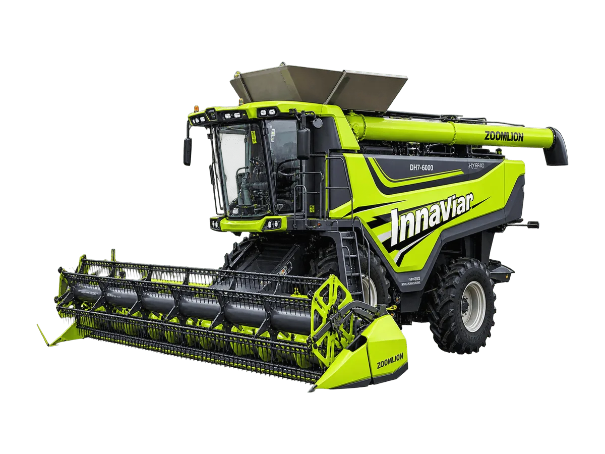

Traktor Hybrid
Zoomlion DH7-6000
Combine harvester hybrid cerdas berkapasitas besar pertama di dunia, dirancang untuk operasi pertanian intensif berskala luas dan pemanenan multi-komoditas. Kompatibel dengan grain header 7,6–9,2 m dan corn header 8–12 baris, dengan kapasitas panen 4–6 ha/jam
Keunggulan
- Andal dan tahan lama: dibanding model bertenaga bahan bakar, jumlah komponen transmisi seperti rantai dan sabuk berkurang 70%, dengan MTBF meningkat 50% sehingga titik perawatan lebih sedikit
- Operasi efisien: kendali elektronik memantau parameter operasi dan mengoordinasikan pengaturan, memungkinkan operasi adaptif yang halus dengan efisiensi kerja meningkat 20%
- Kendali presisi: sistem kontrol elektronik berperforma tinggi menjaga putaran tetap stabil tanpa penurunan, meningkatkan mutu operasi sebesar 10%
- Performa bertenaga: sistem hybrid range-extended menghadirkan tenaga kuat, dengan penggerak empat roda dua motor yang sesuai untuk operasi intensif berkelanjutan
- Hemat energi dan ramah lingkungan: penerapan sistem hybrid range-extended menurunkan konsumsi energi lebih dari 30%
Spesifikasi
| Kapasitas Umpan | 20 kg/s |
|---|---|
| Dimensi | 10.706 × 4.004 × 4.038 mm (tanpa header) |
| Berat Operasi | 20.785 kg (tanpa header) |
| Jarak Rendah Ketanah | 460 mm |
| Model Mesin | YC-K11480 |
| Tipe Mesin | 6 Silinder |
| Kapasitas Tangki BBM | 760 L |
| Sistem Perontokan | 3-Stage Tangential Separation + Twin Axial Rotors |
| Ukuran Drum Perontok | ø600 × 1.440 mm |
| Putaran Drum Perontok | 330–930 rpm |
| Luas Area Separasi | 3,7 m² |
| Sistem Pembersihan | Air & Sieve Cleaning System |
| Kapasitas Hopper | 11,5 m³ |
| Kecepatan Pembongkaran | 110 L/s |
| Transmisi | Electro-Hydraulic Shift + HST |
| Ukuran Ban | IF600/70R28 (depan) / 900/60R32 (belakang) |
| Sistem Gerak | 4WD |
| Rigid Grain Header | 8.030 × 2.300 × 1.550 mm — 2.350 kg |
| Soybean Flex Header | 9.800 × 2.820 × 1.600 mm — 2.850 kg |
| Corn Header | 12 baris — 3.400 / 4.600 kg |
Tanya harga & ketersediaan unit
Tim kami siap membantu memilih unit yang sesuai kebutuhan lahan Anda.